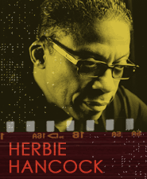

The mid-1990s was a time when a number of jazz musicians, like saxophonist Branford Marsalis, drummer Max Roach, and Greg Osby, were working on projects that mixed jazz with hip-hop. Herbie Hancock spent three years putting together his jazz/r&b /hip-hop album Dis Is Da Drum (1994). As we have heard, many hip-bop efforts are long on the hip-hop and short on the jazz, but Dis Is Da Drum is a remarkable blending of hip-hop and jazz. The musical tracks are layered with samples, rhythmic, and harmonic structures.
Follow the chart below and listen to Herbie Hancock's "Call It '95" (1994).
"Call It '95" features a crowd of talented younger jazz performers. We hear Herbie Hancock, interestingly, on acoustic piano—not on anything electronic—with
trumpeter Wallace Roney and Bennie Maupin (from Miles' bands) on tenor sax. They are backed by
Wah Wah Watson and Darrell 'Bob Dog' Watson, guitar
Frank Thibeaux, bass
Ken Strong and Will Kennedy, drums
Will 'Roc' Griffin, sequencing, sampling, drum loops
Bill Summers and Niayi Asiedu, djembe, jun jun, bell (African percussion)
Mars Lasar, sound designer and, with Darrell Smith, keyboards
"Call It '95" features a good hip-hop groove and an opening instrumental arrangement that is big-band like in its sound and scope.
0:00-0:02 Herbie's voice sample
0:02-0:11 groove
0:11-0:21 instrumental arrangement
0:21-0:56 piano lead with groove
0:56-0:58 break
0:58-1:17 groove
1:17-1:35 piano lead with groove
1:35-1:38 Herbie's voice sample
1:38-1:43 groove
1:43- 1:52 instrumental arrangement
1:52-2:11 Wallace Roney, trumpet solo
2:11-2:29 piano lead with groove
2:29-2:38 break and groove
2:38-2:48 Wallace Roney, trumpet solo
2:48-3:07 instrumental arrangement
3:07-3:31 break
3:31-end piano solo to end